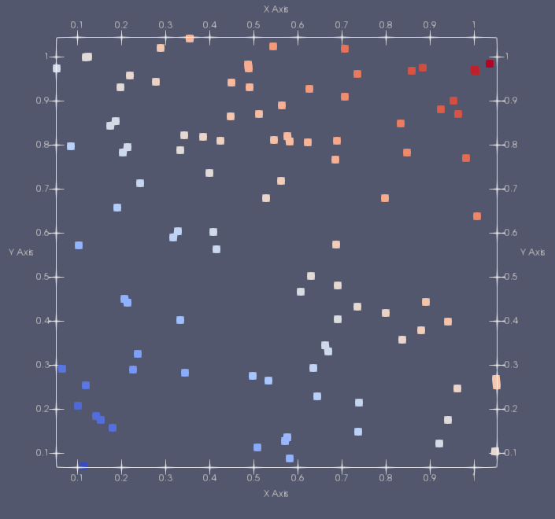

For detailed documentation of the OpenFPM sources, including the examples, see the online Doxygen documentation.
Vector 0: Simple vector initialization
This example show several basic functionalities of the distributed vector vector_dist.
The distributed vector is a set of particles in an N-dimensional space.
In this example it is shown how to:
- Initialize the library
- Create a Box that defines the domain
- An array that defines the boundary conditions
- A Ghost object that will define the extension of the ghost part in physical units
The source code of the example Vector/0_simple/main.cpp. The full doxygen documentation Vector_0_simple.
See also our video lectures dedicated to this topic Video 1, Video 2

Example 1: Vector Ghost layer
This example shows the properties of ghost_get and ghost_put - functions
that synchronize the ghosts layer for a distributed vector vector_dist.
In this example it is shown how to:
- Iterate
vector_distviagetDomainIterator - Redistribute the particles in
vector_distaccording to the underlying domain decomposition viamap - Synchronize the ghost layers in the standard way
NO_POSITION,KEEP_PROPERTIESandSKIP_LABELLINGoptions of theghost_getfunction- Propagate the data from ghost to non-ghost particles via
ghost_put
The source code of the example Vector/1_ghost_get_put/main.cpp. The full doxygen documentation Vector_1_ghost_get.
Example 2: Cell-lists and Verlet-lists
This example shows the properties of ghost_get and ghost_put - functions
that synchronize the ghosts layer for a distributed vector vector_dist.
Key points:
- How to utilize the grid iterator
getGridIterator, to create a grid-like particle domain - Two principal types of fast neighbor lists: cell-list
getCellListand Verlet-listgetVerletfor a distributed vectorvector_dist CELL_MEMFAST,CELL_MEMBALandCELL_MEMMWvariations of the cell-list, with different memory requirements and computations costs- Iterating through the neighboring particles via
getNNIteratorof cell-list and Verlet-list
The source code of the example Vector/1_celllist/main.cpp. The full doxygen documentation Vector_1_celllist.

Example 3: GPU vector
This example shows how to create a vector data-structure with vector_dist_gpu to access a vector_dist-alike data structure from GPU accelerated computing code.
Key points:
- How to convert the source code from using
vector_disttovector_dist_gpuand how it influences the memory layout of the data structure - Oflloading particle position
hostToDevicePosand particle propertyhostToDevicePropdata from CPU to GPU - Lanuching a CUDA-like kernel with
CUDA_LAUNCHand automatic subdivision of a computation loop into workgroups/threads viagetDomainIteratorGPUor manually specifying the number of workgroups and the number of threads in a workgroup - Passing the data-structures to a CUDA-like kernel code via
toKernel - How to use
mapwith the optionRUN_DEVICEto redistribute the particles directly on GPU, andghost_getwithRUN_DEVICEoption to fill ghost particles directly on GPU - How to detect and utilize RDMA on GPU to get the support of CUDA-aware MPI implementation to work directly with device pointers in communication subroutines
The source code of the example Vector/1_gpu_first_step/main.cpp. The full doxygen documentation Vector_1_gpu_first_step.
Example 4: HDF5 Save and load
This example show how to save and load a vector to/from the parallel file format HDF5.
Key points:
- How to save the position/property information of the particles
vector_distinto an .hdf5 file viasave - How to load the position/property information of the particles
vector_distfrom an .hdf5 file viaload
The source code of the example Vector/1_HDF5_save_load/main.cpp. The full doxygen documentation Vector_1_HDF5.
Example 5: Vector expressions
This example shows how to use vector expressions to apply mathematical operations and functions on particles.
The example also shows to create a point-wise applicable function
$$ A_q e^{\frac{|x_p-x_q|^2}{\sigma}} $$
where $A_q$ is the property $A$ of particle $q$, $x_p, x_q$ are positions of particles $p, q$ correspondingly.
Key points:
- Setting an alias for particle properties via
getVofparticle_distto be used within an expression - Composing expressions with scalar particle properties
- Composing expressions with vector particle properties. The expressions are 1) applied point-wise; 2) used to create a component-wise multiplication via
*; 3) scalar product viapmul; 4) compute a normnorm; 5) perform square root operationsqrt - Converting
Pointobject into an expressiongetVExprto be used with vector expressions - Utilizing
operator=and the functionassignto assing singular or multiple particle properties per iteration through particles - Constructing expressions with
applyKernel_inandapplyKernel_in_gento create kernel functions called at particle locations for all the neighboring particles, e.g. as in SPH
$$\sum_{q = Neighborhood(p)} A_q D^{\beta}ker(x_p,x_q) V_q $$
The source code of the example Vector/2_expressions/main.cpp. The full doxygen documentation Vector_2_expression.
Example 6: Molecular Dynamics with Lennard-Jones potential (Cell-List)
This example shows a simple Lennard-Jones molecular dynamics simulation in a stable regime.
The particles interact with the interaction potential
$$ V(x_p,x_q) = 4( (\frac{\sigma}{r})^{12} - (\frac{\sigma}{r})^6 ) $$
$A_q$ is the property $A$ of particle $q$, $x_p, x_q$ are positions of particles $p, q$ correspondingly, $\sigma$ is a free parameter, $r$ is the distance between the particles.
Key points:
- Reusing memory allocated with
getCellListfor the subsequent iterations viaupdateCellList - Utilizing
CELL_MEMBALwithgetCellListto minimize memory footprint - Performing 10000 time steps using symplectic Verlet integrator
$$ \vec{v}(t_{n}+1/2) = \vec{v}_p(t_n) + \frac{1}{2} \delta t \vec{a}(t_n) $$
$$ \vec{x}(t_{n}+1) = \vec{x}_p(t_n) + \delta t \vec{v}(t_n+1/2) $$
$$ \vec{v}(t_{n+1}) = \vec{v}_p(t_n+1/2) + \frac{1}{2} \delta t \vec{a}(t_n+1) $$
- Producing a time-total energy 2D plot with
GoogleChart
The source code of the example Vector/3_molecular_dynamic/main.cpp. The full doxygen documentation Vector_3_md_dyn.
Example 7: Molecular Dynamics with Lennard-Jones potential (Verlet-List)
The physical model in the example is identical to Molecular Dynamics with Lennard-Jones potential (Cell-List). Please refer to it for futher details. Key points:
- Due to the computational cost of updating Verlet-list, r_cut + skin cutoff distance is used
such that the Verlet-list has to be updated once in 10 iterations via
updateVerlet - As Verlet-lists are constructed based on local particle id's, which would be invalidated by
maporghost_get,mapis called every 10 time-step, andghost_getis used withSKIP_LABELLINGoption to keep old indices every iteration
The source code of the example Vector/3_molecular_dynamic/main_vl.cpp. The full doxygen documentation Vector_3_md_vl.
Example 15: Molecular Dynamics with Lennard-Jones potential (Symmetric Verlet-List)
This example is an extension to Molecular Dynamics with Lennard-Jones potential (Verlet-List). It shows how better performance can be achieved for symmetric interaction models with symmetric Verlet-list compared to the standard Verlet-list. Key points:
- Computing the interaction for particles p, q only once
- Propagate the data from potentially ghost particles q to non-ghost particles in their corresponding domains via
ghost_putwith the operation_add_ - Changing the prefactor in the subroutine of calculating the total energy as every pair of particles is visited once (as compared to two times before)
- Updating Verlet-list once in 10 iterations via
updateVerletwith 'VL_SYMMETRIC' flag
The source code of the example Vector/5_molecular_dynamic_sym/main.cpp. The full doxygen documentation Vector_5_md_vl_sym.
Example 16: Molecular Dynamics with Lennard-Jones potential (Symmetric CRS Verlet-List)
This example is an extension to Molecular Dynamics with Lennard-Jones potential (Verlet-List) and Molecular Dynamics with Lennard-Jones potential (Verlet-List). It shows how better performance can be achieved for symmetric interaction models with symmetric Verlet-list compared to the standard Verlet-list. Key points:
- Computing the interaction for particles p, q only once
- Propagate the data from potentially ghost particles q to non-ghost particles in their corresponding domains via
ghost_putwith the operation_add_ - Changing the prefactor in the subroutine of calculating the total energy as every pair of particles is visited once (as compared to two times before)
- Updating Verlet-list once in 10 iterations via
updateVerletwith 'VL_SYMMETRIC' flag
The source code of the example Vector/5_molecular_dynamic_sym/main.cpp. The full doxygen documentation Vector_5_md_vl_sym.
Example 8: Molecular Dynamics with Lennard-Jones potential (GPU)
The physical model in the example is identical to Molecular Dynamics with Lennard-Jones potential (Cell-List) and Molecular Dynamics with Lennard-Jones potential (Verlet-List). Please refer to those for futher details. Key points:
- To get the particle index inside a CUDA-like kernel
GET_PARTICLEmacro is used to avoid overflow in the constructionblockIdx.x * blockDim.x + threadIdx.x - A primitive reduction function
reduce_localwith the operation_add_is used to get the total energy by summing energies of all particles.
The source code of the example Vector/3_molecular_dynamic_gpu/main_vl.cpp. The full doxygen documentation Vector_3_md_dyn_gpu.
Example 9: Molecular Dynamics with Lennard-Jones potential (GPU optimized)
The physical model in the example is identical to Molecular Dynamics with Lennard-Jones potential (Cell-List), Molecular Dynamics with Lennard-Jones potential (Verlet-List) and is based on Molecular Dynamics with Lennard-Jones potential (GPU). Please refer to those for futher details. Key points:
- To achieve coalesced memory access on GPU and to reduce cache load the particle indices are stored in cell-list in a sorted manner, i.e. particles with neighboring indices are located in the same cell-list. This is achieved by assigning new particle indices and storing them temporarily in
vector_dist. - The sorted version of
vector_dist_gpuis offloaded to GPU usingtoKernel_sorted. It usesget_sortinstead ofgetto get a particle index in the cell-list neighborhood iteratorgetNNIteratorBox - The sorted version of particle properties have to be merged to the original ones once the processing is done via
merge_sortofvector_dist
The source code of the example Vector/3_molecular_dynamic_gpu_opt/main_vl.cpp. The full doxygen documentation Vector_3_md_dyn_gpu_opt.
Example 10: Molecular Dynamics with Lennard-Jones potential (Particle reordering)
The physical model in the example is identical to Molecular Dynamics with Lennard-Jones potential (Cell-List), Molecular Dynamics with Lennard-Jones potential (Verlet-List). The example shows how reordering the data can significantly reduce the computational running time. Key points:
- The particles inside
vector_distare reordered viareorderfollowing a Hilbert curve of order m (here m=5) passing through the cells of $2^m \times 2^m \times 2^m$ (here, in 3D) cell-list - It is shown that the frequency of reordering depends on the mobility of particles
- Wall clock time is measured of the function
calc_forceutilizing the objecttimerviastartandstop
The source code of the example Vector/4_reorder/main_data_ord.cpp. The full doxygen documentation Vector_4_reo.
Example 11: Molecular Dynamics with Lennard-Jones potential (Cell-list reordering)
The physical model in the example is identical to Molecular Dynamics with Lennard-Jones potential (Cell-List), Molecular Dynamics with Lennard-Jones potential (Verlet-List). The example shows how reordering the data can significantly reduce the computational running time. Key points:
- The cell-list cells are iterated following a Hilbert curve instead of a normal left-to-right bottom-to-top cell iteration (in 2D). The function
getCellList_hilbofvector_distis used instead ofgetCellList - It is shown that for static or slowly moving particles a speedup of up to 10% could be achieved
The source code of the example Vector/4_reorder/main_comp_ord.cpp. The full doxygen documentation Vector_4_comp_reo.
Example 12: Complex properties in Vector 1
This example shows how to use complex properties in the distributed vector vector_dist
Key points:
- Creating a distributed vector with particle properties: scalar, vector
float[3],Point, list of floatopenfpm::vector<float>, list of custom structuresopenfpm::vector<A>(whereAis a user-defined type with no pointers), vector of vectorsopenfpm::vector<openfpm::vector<float>>> - Redistribute the particles in
vector_distaccording to the underlying domain decomposition. Communicate only the selected particle properties viamap_list(instead of communicating allmap) - Synchronize the ghost layers only for the selected particle properties
ghost_get
The source code of the example Vector/4_complex_prop/main.cpp. The full doxygen documentation Vector_4_complex_prop.
Example 13: Complex properties in Vector 2
This example shows how to use complex properties in the distributed vector vector_dist
Key points:
- Creating a distributed vector with particle properties: scalar, vector
float[3],Point, list of floatopenfpm::vector<float>, list of custom structuresopenfpm::vector<A>(whereAis a user-defined type with memory pointers inside), vector of vectorsopenfpm::vector<openfpm::vector<float>>> - Enabling the user-defined type being serializable by
vector_distviapackRequestmethod to indicate how many byte are needed to serialize the structurepackmethod to serialize the data-structure via methodsallocate,getPointerofExtPreAllocand methodpackofPackerunpackmethod to deserialize the data-structure via methodgetPointerOffsetofExtPreAllocand methodunpackofUnpackernoPointersmethod to inform the serialization system that the object has pointers- Constructing constructor, destructor and
operator=to avoid memory leaks
The source code of the example Vector/4_complex_prop/main.cpp. The full doxygen documentation Vector_4_complex_prop_ser.
Example 14: Multiphase Cell-lists and Verlet-lists
This example is an extension to Example 2: Cell-lists and Verlet-lists and ()[]. It shows how to use multi-phase cell-lists and Verlet-list using multiple instances of vector_dist.
Key points:
- All the phases have to use the same domain decomposition, which is achieved by passing the decomposition of the first phase to the constructor of
vector_distof all the other phases. - The domains have to be iterated individually via
getDomainIterator, the particles redistributed viamap, the ghost layers synchronized viaghost_getfor all the phasesvector_dist. - Constructing Verlet-lists for two phases (ph0, ph1) with
createVerlet, where for one phase ph0 the neighoring particles of ph1 are assigned in the Verlet-list. Cell-list of ph1 has to be passed tocreateVerlet - Constructing Verlet-lists for multiple phases (ph0, ph1, ph2...) with
createVerletM, where for one phase ph0 the neighoring particles of ph1, ph2... are assigned in the Verlet-list. Cell-list containing all of ph1, ph2... create withcreateCellListMhas to be passed tocreateVerletM - Iterating over the neighboring particles of a multiphase Verlet-list with
getNNIteratorwithgetbeing substituded bygetP(particle phase) andgetV(particle id) - Extending example of the symmetric interaction for multiphase cell-lists and Verlet-lists via
createCellListSymM,createVerletSymM
The source code of the example Vector/4_multiphase_celllist_verlet/main.cpp. The full doxygen documentation Vector_4_mp_cl.